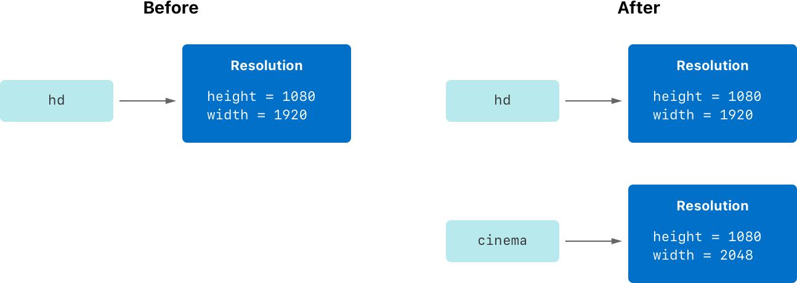
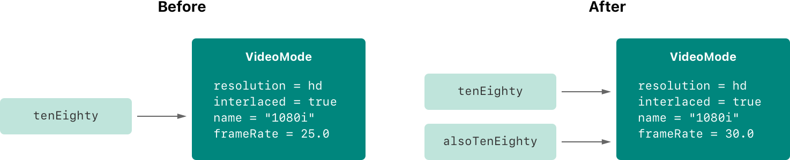

结构体和类作为一种通用而又灵活的结构，成为了人们构建代码的基础。你可以使用定义常量、变量和函数的语法，为你的结构体和类定义属性、添加方法。
与其他编程语言所不同的是，Swift 并不要求你为自定义的结构体和类的接口与实现代码分别创建文件。你只需在单一的文件中定义一个结构体或者类，系统将会自动生成面向其它代码的外部接口。
注意
通常一个类的实例被称为对象。然而相比其他语言，Swift 中结构体和类的功能更加相近，本章中所讨论的大部分功能都可以用在结构体或者类上。因此，这里会使用实例这个更通用的术语。
Swift 中结构体和类有很多共同点。两者都可以：
更多信息请参见 属性、方法、下标、构造过程、扩展 和 协议。
与结构体相比，类还有如下的附加功能：
更多信息请参见 继承、类型转换、析构过程 和 自动引用计数。
类支持的附加功能是以增加复杂性为代价的。作为一般准则，优先使用结构体，因为它们更容易理解，仅在适当或必要时才使用类。实际上，这意味着你的大多数自定义数据类型都会是结构体和枚举。更多详细的比较参见 在结构和类之间进行选择。
注意
类和 actors 共享很多特性。更多信息请参见 并发。
结构体和类有着相似的定义方式。你通过 struct 关键字引入结构体，通过 class 关键字引入类，并将它们的具体定义放在一对大括号中：
struct SomeStructure { // 在这里定义结构体}class SomeClass { // 在这里定义类}注意
每当你定义一个新的结构体或者类时，你都是定义了一个新的 Swift 类型。请使用
UpperCamelCase这种方式来命名类型（如这里的SomeClass和SomeStructure），以便符合标准 Swift 类型的大写命名风格（如String，Int和Bool）。请使用lowerCamelCase这种方式来命名属性和方法（如frameRate和incrementCount），以便和类型名区分。
以下是定义结构体和定义类的示例：
xxxxxxxxxxstruct Resolution { var width = 0 var height = 0}class VideoMode { var resolution = Resolution() var interlaced = false var frameRate = 0.0 var name: String?}在上面的示例中定义了一个名为 Resolution 的结构体，用来描述基于像素的分辨率。这个结构体包含了名为 width 和 height 的两个存储属性。存储属性是与结构体或者类绑定的，并存储在其中的常量或变量。当这两个属性被初始化为整数 0 的时候，它们会被推断为 Int 类型。
在上面的示例还定义了一个名为 VideoMode 的类，用来描述视频显示器的某个特定视频模式。这个类包含了四个可变的存储属性。第一个， resolution，被初始化为一个新的 Resolution 结构体的实例，属性类型被推断为 Resolution。新 VideoMode 实例同时还会初始化其它三个属性，它们分别是初始值为 false 的 interlaced（意为“非隔行视频”），初始值为 0.0 的 frameRate，以及值为可选 String 的 name。因为 name 是一个可选类型，它会被自动赋予一个默认值 nil，意为“没有 name 值”。
Resolution 结构体和 VideoMode 类的定义仅描述了什么是 Resolution 和 VideoMode。它们并没有描述一个特定的分辨率（resolution）或者视频模式（video mode）。为此，你需要创建结构体或者类的一个实例。
创建结构体和类实例的语法非常相似：
xxxxxxxxxxlet someResolution = Resolution()let someVideoMode = VideoMode()结构体和类都使用构造器语法来创建新的实例。构造器语法的最简单形式是在结构体或者类的类型名称后跟随一对空括号，如 Resolution() 或 VideoMode()。通过这种方式所创建的类或者结构体实例，其属性均会被初始化为默认值。构造过程 章节会对类和结构体的初始化进行更详细的讨论。
你可以通过使用点语法访问实例的属性。其语法规则是，实例名后面紧跟属性名，两者以点号（.）分隔，不带空格：
xxxxxxxxxxprint("The width of someResolution is \(someResolution.width)")// 打印 "The width of someResolution is 0"在上面的例子中，someResolution.width 引用 someResolution 的 width 属性，返回 width 的初始值 0。
你也可以访问子属性，如 VideoMode 中 resolution 属性的 width 属性：
xxxxxxxxxxprint("The width of someVideoMode is \(someVideoMode.resolution.width)")// 打印 "The width of someVideoMode is 0"你也可以使用点语法为可变属性赋值：
xxxxxxxxxxsomeVideoMode.resolution.width = 1280print("The width of someVideoMode is now \(someVideoMode.resolution.width)")// 打印 "The width of someVideoMode is now 1280"所有结构体都有一个自动生成的成员逐一构造器，用于初始化新结构体实例中成员的属性。新实例中各个属性的初始值可以通过属性的名称传递到成员逐一构造器之中：
xxxxxxxxxxlet vga = Resolution(width: 640, height: 480)与结构体不同，类实例没有默认的成员逐一构造器。构造过程 章节会对构造器进行更详细的讨论。
值类型是这样一种类型，当它被赋值给一个变量、常量或者被传递给一个函数的时候，其值会被拷贝。
在之前的章节中，你已经大量使用了值类型。实际上，Swift 中所有的基本类型：整数（integer）、浮点数（floating-point number）、布尔值（boolean）、字符串（string)、数组（array）和字典（dictionary），都是值类型，其底层也是使用结构体实现的。
Swift 中所有的结构体和枚举类型都是值类型。这意味着它们的实例，以及实例中所包含的任何值类型的属性，在代码中传递的时候都会被复制。
注意
标准库定义的集合，例如数组，字典和字符串，都对复制进行了优化以降低性能成本。新集合不会立即复制，而是跟原集合共享同一份内存，共享同样的元素。在集合的某个副本要被修改前，才会复制它的元素。而你在代码中看起来就像是立即发生了复制。
请看下面这个示例，其使用了上一个示例中的 Resolution 结构体：
xxxxxxxxxxlet hd = Resolution(width: 1920, height: 1080)var cinema = hd在以上示例中，声明了一个名为 hd 的常量，其值为一个初始化为全高清视频分辨率（1920 像素宽，1080 像素高）的 Resolution 实例。
然后示例中又声明了一个名为 cinema 的变量，并将 hd 赋值给它。因为 Resolution 是一个结构体，所以会先创建一个现有实例的副本，然后将副本赋值给 cinema 。尽管 hd 和 cinema 有着相同的宽（width）和高（height），但是在幕后它们是两个完全不同的实例。
下面，为了符合数码影院放映的需求（2048 像素宽，1080 像素高），cinema 的 width 属性被修改为稍微宽一点的 2K 标准：
xxxxxxxxxxcinema.width = 2048查看 cinema 的 width 属性，它的值确实改为了 2048：
xxxxxxxxxxprint("cinema is now \(cinema.width) pixels wide")// 打印 "cinema is now 2048 pixels wide"然而，初始的 hd 实例中 width 属性还是 1920：
xxxxxxxxxxprint("hd is still \(hd.width) pixels wide")// 打印 "hd is still 1920 pixels wide"将 hd 赋值给 cinema 时，hd 中所存储的值会拷贝到新的 cinema 实例中。结果就是两个完全独立的实例包含了相同的数值。由于两者相互独立，因此将 cinema 的 width 修改为 2048 并不会影响 hd 中的 width 的值，如下图所示：

枚举也遵循相同的行为准则：
xenum CompassPoint { case north, south, east, west mutating func turnNorth() { self = .north }}var currentDirection = CompassPoint.westlet rememberedDirection = currentDirectioncurrentDirection.turnNorth()
print("The current direction is \(currentDirection)")print("The remembered direction is \(rememberedDirection)")// 打印 "The current direction is north"// 打印 "The remembered direction is west"当 rememberedDirection 被赋予了 currentDirection 的值，实际上它被赋予的是值的一个拷贝。赋值过程结束后再修改 currentDirection 的值并不影响 rememberedDirection 所储存的原始值的拷贝。
与值类型不同，引用类型在被赋予到一个变量、常量或者被传递到一个函数时，其值不会被拷贝。因此，使用的是已存在实例的引用，而不是其拷贝。
请看下面这个示例，其使用了之前定义的 VideoMode 类：
xxxxxxxxxxlet tenEighty = VideoMode()tenEighty.resolution = hdtenEighty.interlaced = truetenEighty.name = "1080i"tenEighty.frameRate = 25.0以上示例中，声明了一个名为 tenEighty 的常量，并让其引用一个 VideoMode 类的新实例。它的视频模式（video mode）被赋值为之前创建的 HD 分辨率（1920*1080）的一个拷贝。然后将它设置为隔行视频，名字设为 “1080i”，并将帧率设置为 25.0 帧每秒。
接下来，将 tenEighty 赋值给一个名为 alsoTenEighty 的新常量，并修改 alsoTenEighty 的帧率：
xxxxxxxxxxlet alsoTenEighty = tenEightyalsoTenEighty.frameRate = 30.0因为类是引用类型，所以 tenEight 和 alsoTenEight 实际上引用的是同一个 VideoMode 实例。换句话说，它们是同一个实例的两种叫法，如下图所示：

通过查看 tenEighty 的 frameRate 属性，可以看到它正确地显示了底层的 VideoMode 实例的新帧率 30.0：
xxxxxxxxxxprint("The frameRate property of tenEighty is now \(tenEighty.frameRate)")// 打印 "The frameRate property of theEighty is now 30.0"这个例子也显示了为何引用类型更加难以理解。如果 tenEighty 和 alsoTenEighty 在你代码中的位置相距很远，那么就很难找到所有修改视频模式的地方。无论在哪使用 tenEighty，你都要考虑使用 alsoTenEighty 的代码，反之亦然。相反，值类型就更容易理解了，因为你的源码中与同一个值交互的代码都很近。
需要注意的是 tenEighty 和 alsoTenEighty 被声明为常量而不是变量。然而你依然可以改变 tenEighty.frameRate 和 alsoTenEighty.frameRate，这是因为 tenEighty 和 alsoTenEighty 这两个常量的值并未改变。它们并不“存储”这个 VideoMode 实例，而仅仅是对 VideoMode 实例的引用。所以，改变的是底层 VideoMode 实例的 frameRate 属性，而不是指向 VideoMode 的常量引用的值。
因为类是引用类型，所以多个常量和变量可能在幕后同时引用同一个类实例。（对于结构体和枚举来说，这并不成立。因为它们作为值类型，在被赋予到常量、变量或者传递到函数时，其值总是会被拷贝。）
判定两个常量或者变量是否引用同一个类实例有时很有用。为了达到这个目的，Swift 提供了两个恒等运算符：
===）!==）使用这两个运算符检测两个常量或者变量是否引用了同一个实例：
xxxxxxxxxxif tenEighty === alsoTenEighty { print("tenEighty and alsoTenEighty refer to the same VideoMode instance.")}// 打印 "tenEighty and alsoTenEighty refer to the same VideoMode instance."请注意，“相同”（用三个等号表示，===）与“等于”（用两个等号表示，==）的不同。“相同”表示两个类类型（class type）的常量或者变量引用同一个类实例。“等于”表示两个实例的值“相等”或“等价”，判定时要遵照设计者定义的评判标准。
当在定义你的自定义结构体和类的时候，你有义务来决定判定两个实例“相等”的标准。在章节 等价操作符 中将会详细介绍实现自定义 == 和 != 运算符的流程。
如果你有 C，C++ 或者 Objective-C 语言的经验，那么你也许会知道这些语言使用指针来引用内存中的地址。Swift 中引用了某个引用类型实例的常量或变量，与 C 语言中的指针类似，不过它并不直接指向某个内存地址，也不要求你使用星号（*）来表明你在创建一个引用。相反，Swift 中引用的定义方式与其它的常量或变量的一样。如果需要直接与指针交互，你可以使用标准库提供的指针和缓冲区类型 —— 参见 手动管理内存。